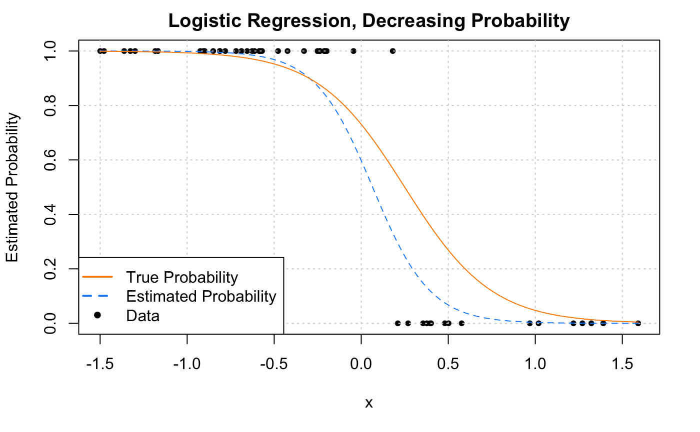
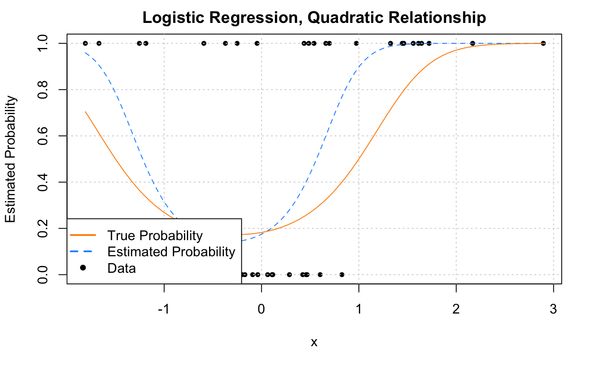

Logistic Regression
"The line between disorder and order lies in logistics."
- Sun Tzu (speaking about a decidedly different type of logistics)
After reading this chapter you will be able to:
- Understand how generalized linear models are a generalization of ordinary linear models.
- Use logistic regression to model a binary response.
- Apply concepts learned for ordinary linear models to logistic regression.
- Use logistic regression to perform classification.
Simple motivating question Can we use linear models to deal with categorical variables?
Yes!
The model that we previously covered, which we now call ordinary linear regression, is actually a specific case of the more general, generalized linear model. (Aren't statisticians great at naming things?)
Generalized Linear Models
So far, we've had response variables that, conditioned on the predictors, were modeled using a normal distribution with a mean that is some linear combination of the predictors. This linear combination is what made a linear model "linear."
Y∣X=x∼N(β0+β1x1+…+βp−1xp−1, σ2)
Now we'll allow for two modifications of this situation, which will let us use linear models in many more situations. Instead of using a normal distribution for the response conditioned on the predictors, we'll allow for other distributions. Also, instead of the conditional mean being a linear combination of the predictors, it can be some function of a linear combination of the predictors.
In general, a generalized linear model has three parts:
- A distribution of the response conditioned on the predictors. (Technically this distribution needs to be from the exponential family of distributions.)
- A linear combination of the p−1 predictors, β0+β1x1+β2x2+…+βp−1xp−1, which we write as η(x). That is,
η(x)=β0+β1x1+β2x2+…+βp−1xp−1
- A link function, g(), that defines how η(x), the linear combination of the predictors, is related to the mean of the response conditioned on the predictors, E[Y∣X=x].
η(x)=g(E[Y∣X=x]).
The following table summarizes three examples of a generalized linear model:
| Linear Regression | Poisson Regression | Logistic Regression | |
|---|---|---|---|
| Y∣X=x | N(μ(x),σ2) | Pois(λ(x)) | Bern(p(x)) |
| Distribution Name | Normal | Poisson | Bernoulli (Binomial) |
| E[Y∣X=x] | μ(x) | λ(x) | p(x) |
| Support | Real: (−∞,∞) | Integer: 0,1,2,… | Integer: 0,1 |
| Usage | Numeric Data | Count (Integer) Data | Binary (Class ) Data |
| Link Name | Identity | Log | Logit |
| Link Function | η(x)=μ(x) | η(x)=log(λ(x)) | η(x)=log(1−p(x)p(x)) |
| Mean Function | μ(x)=η(x) | λ(x)=eη(x) | p(x)=1+eη(x)eη(x)=1+e−η(x)1 |
Like ordinary linear regression, we will seek to "fit" the model by estimating the β parameters. To do so, we will use the method of maximum likelihood.
Note that a Bernoulli distribution is a specific case of a binomial distribution where the n parameter of a binomial is 1. Binomial regression is also possible, but we'll focus on the much more popular Bernoulli case.
So, in general, GLMs relate the mean of the response to a linear combination of the predictors, η(x), through the use of a link function, g(). That is,
η(x)=g(E[Y∣X=x]).
The mean is then
E[Y∣X=x]=g−1(η(x)).
Binary Response
To illustrate the use of a GLM we'll focus on the case of binary responses variable coded using 0 and 1. In practice, these 0 and 1s will code for two classes such as yes/no, cat/dog, sick/healthy, etc.
Y={10yesno
First, we define some notation that we will use throughout.
p(x)=P[Y=1∣X=x]
With a binary (Bernoulli) response, we'll mostly focus on the case when Y=1, since with only two possibilities, it is trivial to obtain probabilities when Y=0.
P[Y=0∣X=x]+P[Y=1∣X=x]=1
P[Y=0∣X=x]=1−p(x)
We now define the logistic regression model.
log(1−p(x)p(x))=β0+β1x1+…+βp−1xp−1
Immediately we notice some similarities to ordinary linear regression, in particular, the right hand side. This is our usual linear combination of the predictors. We have our usual p−1 predictors for a total of p β parameters. (Note, many more machine learning focused texts will use p as the number of parameters. This is an arbitrary choice, but you should be aware of it.)
The left hand side is called the log odds, which is the log of the odds. The odds are the probability for a positive event (Y=1) divided by the probability of a negative event (Y=0). So when the odds are 1, the two events have equal probability. Odds greater than 1 favor a positive event. The opposite is true when the odds are less than 1.
1−p(x)p(x)=P[Y=0∣X=x]P[Y=1∣X=x]
Essentially, the log odds are the logit transform applied to p(x).
logit(ξ)=log(1−ξξ)
It will also be useful to define the inverse logit, otherwise known as the "logistic" or sigmoid function.
logit−1(ξ)=1+eξeξ=1+e−ξ1
Note that for x∈(−∞,∞)), this function outputs values between 0 and 1.
Students often ask, where is the error term? The answer is that its something that is specific to the normal model. First notice that the model with the error term,
Y=β0+β1x1+…+βqxq+ϵ, ϵ∼N(0,σ2)
can instead be written as
Y∣X=x∼N(β0+β1x1+…+βqxq, σ2).
While our main focus is on estimating the mean, β0+β1x1+…+βqxq, there is also another parameter, σ2 which needs to be estimated. This is the result of the normal distribution having two parameters.
With logistic regression, which uses the Bernoulli distribution, we only need to estimate the Bernoulli distribution's single parameter p(x), which happens to be its mean.
log(1−p(x)p(x))=β0+β1x1+…+βqxq
So even though we introduced ordinary linear regression first, in some ways, logistic regression is actually simpler.
Note that applying the inverse logit transformation allow us to obtain an expression for p(x).
p(x)=P[Y=1∣X=x]=1+eβ0+β1x1+⋯+βp−1x(p−1)eβ0+β1x1+⋯+βp−1x(p−1)
Fitting Logistic Regression
With n observations, we write the model indexed with i to note that it is being applied to each observation.
log(1−p(xi))p(xi))=β0+β1xi1+⋯+βp−1xi(p−1)
We can apply the inverse logit transformation to obtain P[Yi=1∣Xi=xi] for each observation. Since these are probabilities, it's good that we used a function that returns values between 0 and 1.
p(xi)=P[Yi=1∣Xi=xi]=1+eβ0+β1xi1+⋯+βp−1xi(p−1)eβ0+β1xi1+⋯+βp−1xi(p−1)
1−p(xi)=P[Yi=0∣X=xi]=1+eβ0+β1xi1+⋯+βp−1xi(p−1)1
To "fit" this model, that is estimate the β parameters, we will use maximum likelihood.
β=[β0,β1,β2,β3,…,βp−1]
We first write the likelihood given the observed data.
L(β)=i=1∏nP[Yi=yi∣Xi=xi]
This is already technically a function of the β parameters, but we'll do some rearrangement to make this more explicit.[1]
L(β)=i=1∏np(xi)yi(1−p(xi))(1−yi)
L(β)=i:yi=1∏np(xi)j:yj=0∏n(1−p(xj))
L(β)=i:yi=1∏1+eβ0+β1xi1+⋯+βp−1xi(p−1)eβ0+β1xi1+⋯+βp−1xi(p−1)j:yj=0∏1+eβ0+β1xj1+⋯+βp−1xj(p−1)1
Fitting Issues
We should note that, if there exists some β∗ such that
xi⊤β∗>0⟹yi=1
and
xi⊤β∗<0⟹yi=0
for all observations, then the MLE is not unique. Such data is said to be separable.[2]
This, and similar numeric issues related to estimated probabilities near 0 or 1, will return a warning in R:
message("Warning: glm.fit: fitted probabilities numerically 0 or 1 occurred")
Simulation Examples
sim_logistic_data = function(sample_size = 25, beta_0 = -2, beta_1 = 3) {
x = rnorm(n = sample_size)
eta = beta_0 + beta_1 * x
p = 1 / (1 + exp(-eta))
y = rbinom(n = sample_size, size = 1, prob = p)
data.frame(y, x)
}
You might think, why not simply use ordinary linear regression? Even with a binary response, our goal is still to model (some function of) E[Y∣X=x].
With a binary response coded as 0 and 1, this implies:
E[Y∣X=x]=P[Y=1∣X=x] since
E[Y∣X=x]=1⋅P[Y=1∣X=x]+0⋅P[Y=0∣X=x]=P[Y=1∣X=x]
Then why can't we just use ordinary linear regression to estimate E[Y∣X=x], and thus P[Y=1∣X=x]?
To investigate, let's simulate data from the following model:
log(1−p(x)p(x))=−2+3x
Another way to write this, which better matches the function we're using to simulate the data:
Yi∣Xi=xipiη(xi)∼Bern(pi)=p(xi)=1+e−η(xi)1=−2+3xi
set.seed(1)
example_data = sim_logistic_data()
head(example_data)
After simulating a dataset, we'll then fit both ordinary linear regression and logistic regression. Notice that currently the responses variable y is a numeric variable that only takes values 0 and 1. Later we'll see that we can also fit logistic regression when the response is a factor variable with only two levels. (Generally, having a factor response is preferred, but having a dummy response allows use to make the comparison to using ordinary linear regression.)
# ordinary linear regression
fit_lm = lm(y ~ x, data = example_data)
# logistic regression
fit_glm = glm(y ~ x, data = example_data, family = binomial)
Notice that the syntax is extremely similar. What's changed?
lm()has becomeglm()- We've added
family = binomialargument
In a lot of ways, lm() is just a more specific version of glm(). For example
glm(y ~ x, data = example_data)
would actually fit the ordinary linear regression that we have seen in the past. By default, glm() uses family = gaussian argument. That is, we're fitting a GLM with a normally distributed response and the identity function as the link.
The family argument to glm() actually specifies both the distribution and the link function. If not made explicit, the link function is chosen to be the canonical link function, which is essentially the most mathematical convenient link function. See ?glm and ?family for details. For example, the following code explicitly specifies the link function which was previously used by default.
# more detailed call to glm for logistic regression
fit_glm = glm(y ~ x, data = example_data, family = binomial(link = "logit"))
Making predictions with an object of type glm is slightly different than making predictions after fitting with lm(). In the case of logistic regression, with family = binomial, we have:
type |
Returned |
|---|---|
"link" [default] |
η^(x)=log(1−p^(x)p^(x)) |
"response" |
p^(x)=1+eη^(x)eη^(x)=1+e−η^(x)1 |
That is, type = "link" will get you the log odds, while type = "response" will return the estimated mean, in this case, P[Y=1∣X=x] for each observation.

plot(y ~ x, data = example_data,
pch = 20, ylab = "Estimated Probability",
main = "Ordinary vs Logistic Regression")
grid()
abline(fit_lm, col = "darkorange")
curve(predict(fit_glm, data.frame(x), type = "response"),
add = TRUE, col = "dodgerblue", lty = 2)
legend("topleft", c("Ordinary", "Logistic", "Data"), lty = c(1, 2, 0),
pch = c(NA, NA, 20), lwd = 2, col = c("darkorange", "dodgerblue", "black"))
Since we only have a single predictor variable, we are able to graphically show this situation. First, note that the data, is plotted using black dots. The response y only takes values 0 and 1.
The solid orange line, is the fitted ordinary linear regression.
The dashed blue curve is the estimated logistic regression. It is helpful to realize that we are not plotting an estimate of Y for either. (Sometimes it might seem that way with ordinary linear regression, but that isn't what is happening.) For both, we are plotting E^[Y∣X=x], the estimated mean, which for a binary response happens to be an estimate of P[Y=1∣X=x].
We immediately see why ordinary linear regression is not a good idea. While it is estimating the mean, we see that it produces estimates that are less than 0! (And in other situations could produce estimates greater than 1!) If the mean is a probability, we don't want probabilities less than 0 or greater than 1.
Enter logistic regression. Since the output of the inverse logit function is restricted to be between 0 and 1, our estimates make much more sense as probabilities. Let's look at our estimated coefficients. (With a lot of rounding, for simplicity.)
round(coef(fit_glm), 1)
Our estimated model is then:
log(1−p^(x)p^(x))=−2.3+3.7x
Because we're not directly estimating the mean, but instead a function of the mean, we need to be careful with our interpretation of β^1=3.7. This means that, for a one unit increase in x, the log odds change (in this case increase) by 3.7. Also, since β^1 is positive, as we increase x we also increase p^(x). To see how much, we have to consider the inverse logistic function.
For example, we have:
P^[Y=1∣X=−0.5]=1+e−2.3+3.7⋅(−0.5)e−2.3+3.7⋅(−0.5)≈0.016
P^[Y=1∣X=0]=1+e−2.3+3.7⋅(0)e−2.3+3.7⋅(0)≈0.09112296
P^[Y=1∣X=1]=1+e−2.3+3.7⋅(1)e−2.3+3.7⋅(1)≈0.8021839
Now that we know we should use logistic regression, and not ordinary linear regression, let's consider another example. This time, let's consider the model
log(1−p(x)p(x))=1+−4x.
Again, we could re-write this to better match the function we're using to simulate the data:
Yi∣Xi=xipiη(xi)∼Bern(pi)=p(xi)=1+e−η(xi)1=1+−4xi
In this model, as x increases, the log odds decrease.
set.seed(1)
example_data = sim_logistic_data(sample_size = 50, beta_0 = 1, beta_1 = -4)
We again simulate some observations form this model, then fit logistic regression.
fit_glm = glm(y ~ x, data = example_data, family = binomial)
plot(y ~ x, data = example_data,
pch = 20, ylab = "Estimated Probability",
main = "Logistic Regression, Decreasing Probability")
grid()
curve(predict(fit_glm, data.frame(x), type = "response"),
add = TRUE, col = "dodgerblue", lty = 2)
curve(boot::inv.logit(1 - 4 * x), add = TRUE, col = "darkorange", lty = 1)
legend("bottomleft", c("True Probability", "Estimated Probability", "Data"), lty = c(1, 2, 0),
pch = c(NA, NA, 20), lwd = 2, col = c("darkorange", "dodgerblue", "black"))

Now let's look at an example where the estimated probability doesn't always simply increase or decrease. Much like ordinary linear regression, the linear combination of predictors can contain transformations of predictors (in this case a quadratic term) and interactions.
sim_quadratic_logistic_data = function(sample_size = 25) {
x = rnorm(n = sample_size)
eta = -1.5 + 0.5 * x + x ^ 2
p = 1 / (1 + exp(-eta))
y = rbinom(n = sample_size, size = 1, prob = p)
data.frame(y, x)
}
log(1−p(x)p(x))=−1.5+0.5x+x2.
Again, we could re-write this to better match the function we're using to simulate the data:
Yi∣Xi=xipiη(xi)∼Bern(pi)=p(xi)=1+e−η(xi)1=−1.5+0.5xi+xi2
set.seed(42)
example_data = sim_quadratic_logistic_data(sample_size = 50)
fit_glm = glm(y ~ x + I(x^2), data = example_data, family = binomial)

plot(y ~ x, data = example_data,
pch = 20, ylab = "Estimated Probability",
main = "Logistic Regression, Quadratic Relationship")
grid()
curve(predict(fit_glm, data.frame(x), type = "response"),
add = TRUE, col = "dodgerblue", lty = 2)
curve(boot::inv.logit(-1.5 + 0.5 * x + x ^ 2),
add = TRUE, col = "darkorange", lty = 1)
legend("bottomleft", c("True Probability", "Estimated Probability", "Data"), lty = c(1, 2, 0),
pch = c(NA, NA, 20), lwd = 2, col = c("darkorange", "dodgerblue", "black"))
Working with Logistic Regression
While the logistic regression model isn't exactly the same as the ordinary linear regression model, because they both use a linear combination of the predictors
η(x)=β0+β1x1+β2x2+…+βp−1xp−1
working with logistic regression is very similar. Many of the things we did with ordinary linear regression can be done with logistic regression in a very similar fashion. For example,
- Testing for a single β parameter
- Testing for a set of β parameters
- Formula specification in
R - Interpreting parameters and estimates
- Confidence intervals for parameters
- Confidence intervals for mean response
- Variable selection
Hypothesis Testing: Wald Test
In ordinary linear regression, we perform the test of
H0:βj=0vsH1:βj=0
using a t-test.
For the logistic regression model,
log(1−p(x)p(x))=β0+β1x1+…+βp−1xp−1
we can again perform a test of
H0:βj=0vsH1:βj=0
however, the test statistic and its distribution are no longer t.
With a little algebra and mathematical work, we can see that the test statistic takes the same form
z=SE[β^j]β^j−βj∼approxN(0,1)
but now we are performing a z-test, as the test statistic is approximated by a standard normal distribution, provided we have a large enough sample. (The t-test for ordinary linear regression, assuming the assumptions were correct, had an exact distribution for any sample size.)
We'll skip some of the exact details of the calculations, as R will obtain the standard error for us. The use of this test will be extremely similar to the t-test for ordinary linear regression. Essentially the only thing that changes is the distribution of the test statistic.
Likelihood-Ratio Test
Consider the following full model,
log(1−p(xi)p(xi))=β0+β1xi1+β2xi2+⋯+β(p−1)xi(p−1)+ϵi
This model has p−1 predictors, for a total of p β-parameters. We will denote the MLE of these β-parameters as β^Full
Now consider a null (or reduced) model,
log(1−p(xi)p(xi))=β0+β1xi1+β2xi2+⋯+β(q−1)xi(q−1)+ϵi
where q<p. This model has q−1 predictors, for a total of q β-parameters. We will denote the MLE of these β-parameters as β^Null
As with linear regression, the difference between these two models can be codified by the null hypothesis of a test.
H0:βq=βq+1=⋯=βp−1=0.
This implies that the reduced model is nested inside the full model.
We then define a test statistic, D,
D=−2log(L(β^Full)L(β^Null))=2log(L(β^Null)L(β^Full))=2(ℓ(β^Full)−ℓ(β^Null))
where L denotes a likelihood and ℓ denotes a log-likelihood. For a large enough sample, this test statistic has an approximate Chi-square distribution
D∼approxχk2
where k=p−q, the difference in number of parameters of the two models.
This test, which we will call the Likelihood-Ratio Test, will be the analogue to the ANOVA F-test for logistic regression. Interestingly, to perform the Likelihood-Ratio Test, we'll actually again use the anova() function in R!.
The Likelihood-Ratio Test is actually a rather general test, however, here we have presented a specific application to nested logistic regression models.
Unfortunately, unlike ordinary linear regression, there is no analytical solution for this maximization problem. Instead, it will need to be solved numerically. Fortunately,
Rwill take care of this for us using an iteratively reweighted least squares algorithm. (We'll leave the details for a machine learning or optimization course, which would likely also discuss alternative optimization strategies.) ↩︎When this happens, the model is still "fit," but there are consequences, namely, the estimated coefficients are highly suspect. This is an issue when then trying to interpret the model. When this happens, the model will often still be useful for creating a classifier, which will be discussed later. However, it is still subject to the usual evaluations for classifiers to determine how well it is performing. For details, see Modern Applied Statistics with S-PLUS, Chapter 7 ↩︎